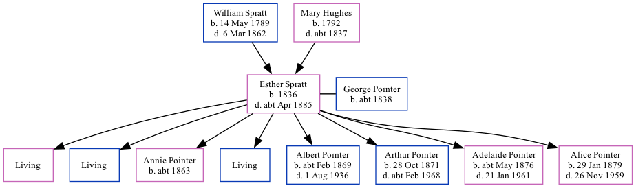

Esther Pointer (née Spratt) 1836 - c1885 [ Home ] | [ Calendar ] | [ Surnames Index ] | [ Family History ]The child of William Spratt (a laborer) and Mary Hughes Esther Spratt , the three times great-aunt of Nigel Horne , was born in St Nicholas-at-Wade, Kent, England in 18361 , was baptized there on Dec 18, 1836 and also married George Pointer (a house carpenter with whom she had 8 children: Abigail Jane , Augustus , Annie Elizabeth , Alfred G , Albert William , Arthur Thomas , Adelaide Agnes Esther and Alice Mary , along with 3 surviving children) there, on Oct 14, 18581 .
Throughout her life, Esther lived in several places: at The Street in St Nicholas-at-Wade on Jun 6, 18414 ; at John Street, St Peters, Thanet, Kent, England on Apr 7, 18615 ; and on Station Road, Birchington, Kent on Apr 3, 18816 .
She died c. Apr 1885 in Thanet2 and was buried at All Saints Church, Birchington, Kent on Apr 25, 18853 .
Parents William was born on May 14, 1789Mary was born in 1792Children Annie Elizabeth was born c. 1863Albert William was born c. Feb 1869Arthur Thomas was born on Oct 28, 1871Adelaide Agnes Esther was born c. May 1876Alice Mary was born on Jan 29, 1879Citations Kent, Canterbury Archdeaconry marriages 1538-1928 - Findmypast England & Wales deaths 1837-2007 - Findmypast Kent, Canterbury Archdeaconry burials 1538-1988 - Findmypast 1841 England, Wales & Scotland Census - Findmypast (was age 4) 1861 England, Wales & Scotland Census - Findmypast (was age 24 and the wife of the head of the household) 1881 England, Wales & Scotland Census - Findmypast (was age 44 and the wife of the head of the household) Media England & Wales marriages 1837-2008 - BMD/M/1858/4/PZ/000441/036 Kent, Canterbury Archdeaconry marriages 1538-1928 - GBPRS/CANT/M/97245529/2 1861 England, Wales & Scotland Census - GBC/1861/0003550008 England & Wales deaths 1837-2007 - BMD/D/1885/2/AZ/000280/372 Kent, Canterbury Archdeaconry burials 1538-1988 - GBPRS/CANT/D/95392601 1841 England, Wales & Scotland Census - GBC/1841/0013960504 1881 England, Wales & Scotland Census Transcription - GBC-1881-0004822323 Kent, Canterbury Archdeaconry Baptisms Transcription - GBPRS-CANT-B-96801244 Family Tree Map
Generated by Ged2Site . Last updated on Apr 1, 2025